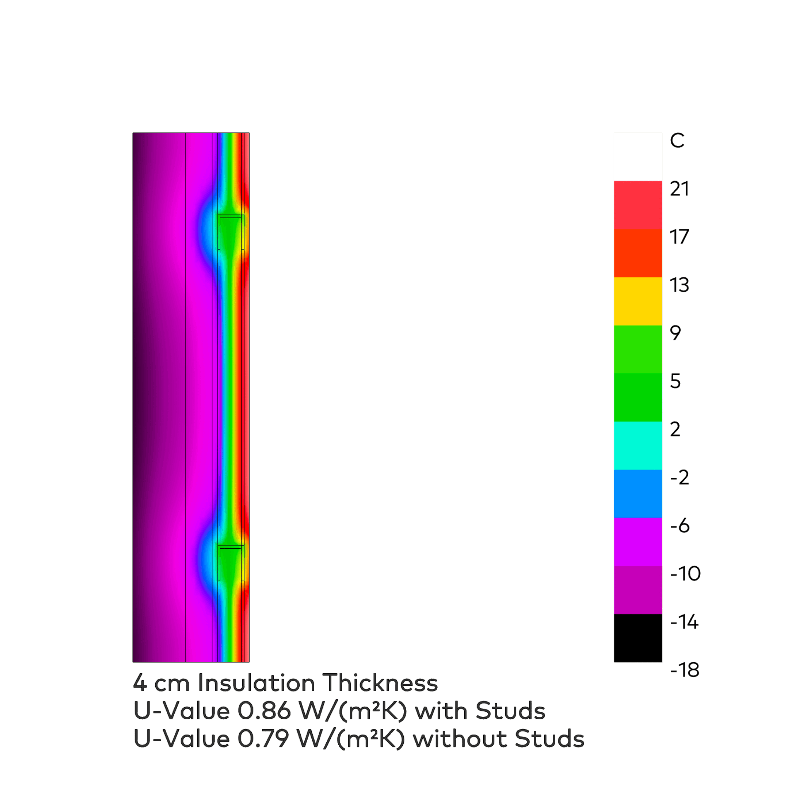
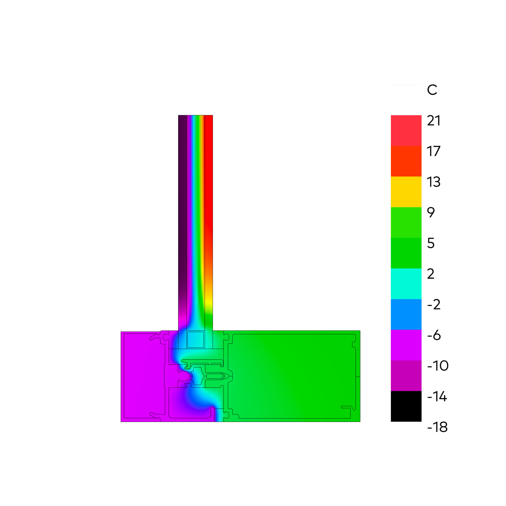
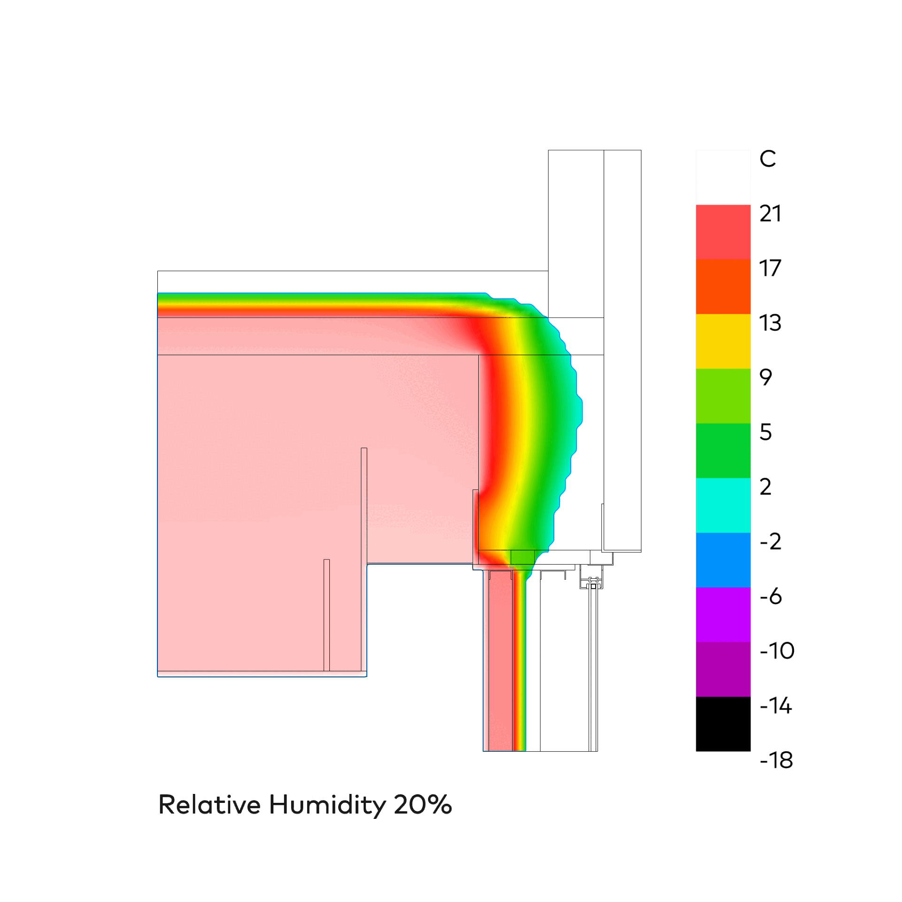

Thermische Hülle + Kondensationsrisiko
Honeybee
⬤ Honeybee simuliert Wärmeflüsse in 3D-Details (Rahmen, Anschlüsse, Brücken) – numerisch U-Werte, Oberflächentemperaturen nach Geometrie/Material/Befestigung. Identifiziert Kondensations-/Schimmelrisiken. Optimiert Konstruktionen (Dämmung, Luftdichtheit) für hygienische Hüllen. DIN 4108/EN ISO 10211/13788-konform – sichere, langlebige Details.
⬤ Honeybee simulates heat flows in 3D detail (frames, connections, bridges) – numerically U-values, surface temperatures according to geometry/material/fastening. Identifies condensation/mold risks. Optimizes designs (insulation, airtightness) for hygienic envelopes. DIN 4108/EN ISO 10211/13788 compliant – safe, durable details.